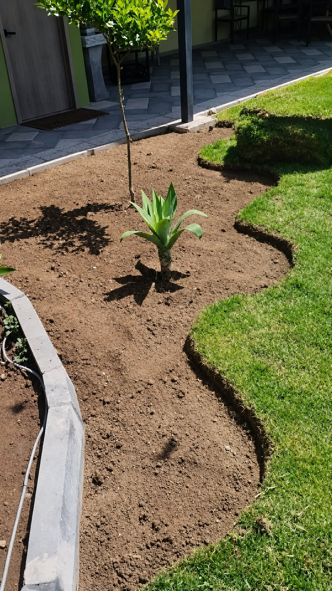
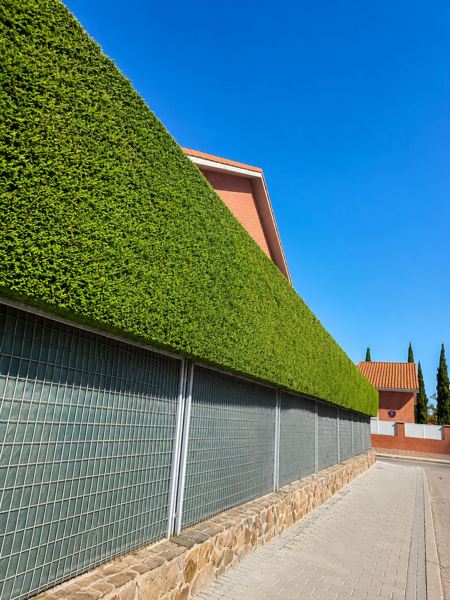
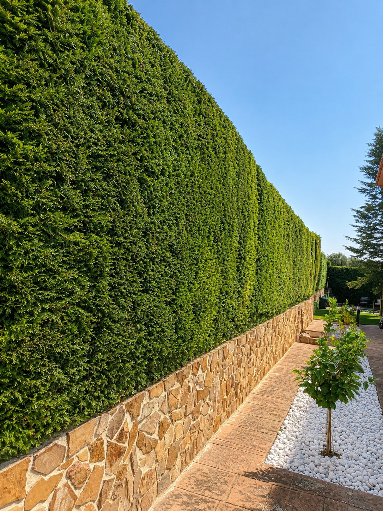

Mantenimiento profesional de jardines, riego, poda y desbroce en Madrid capital, Coslada, San Sebastián de los Reyes, Getafe y toda la provincia.
Valoramos tu espacio antes de actuar.
Respuesta ágil por WhatsApp.
Retirada y orden tras el trabajo.
Mantenemos jardines, zonas verdes y espacios exteriores siempre cuidados, limpios y listos para disfrutar en Madrid capital, área metropolitana y toda la provincia.

Corte de césped, perfilado de setos, abonado, control preventivo de plagas y cuidado continuo para que tu jardín luzca impecable todo el año.
Consultar servicio
Diseño, instalación y puesta a punto de sistemas de riego por goteo o aspersión. Programación eficiente para optimizar el consumo de agua.
Consultar servicio
Poda de altura, perfilado de setos, saneamiento de árboles y arbustos. Eliminación segura de ramas peligrosas o secas con limpieza posterior.
Consultar servicio
Desbroce de parcelas, retirada de malas hierbas, maleza y escombros vegetales. Dejamos terrenos preparados para construir o cultivar.
Consultar servicio
Higiene y mantenimiento programado de portales, escaleras, pasamanos y cristales. Mantenemos el acceso a tu vivienda impecable y desinfectado.
Consultar servicio
Servicio integral para urbanizaciones y comunidades de vecinos: cuidado de zonas comunes, piscinas, jardines comunitarios y limpiezas programadas.
Consultar servicioEste trabajo muestra el proceso completo de un jardín decorativo real. Después, arrastra las comparativas para ver más cambios de mantenimiento y puesta a punto.
Perfilado, limpieza, recuperación visual del verde y una composición ordenada para multiplicar la sensación de cuidado.
Retirada de maleza, limpieza de perímetros y acabado ordenado para dejar el terreno útil desde el primer día.
Mantenimiento de zonas comunes, poda ligera y limpieza visual para mejorar la primera impresión del edificio.
Una muestra visual de nuestro día a día: jardines limpios, mantenimiento profesional y espacios exteriores transformados en Madrid y alrededores.



Si has confiado en Jardines Edén, nos ayudaría muchísimo tu valoración en Google. Solo te llevará 30 segundos y otros vecinos podrán descubrirnos gracias a ti.
Tu opinión nos hace mejorar y ayuda a otros vecinos a confiar en nosotros.
Escribir reseña en Google Te llevará solo 30 segundosTu reseña es pública y verificada por Google

Madrid capital y provincia
por WhatsApp
Nos tomamos muy en serio el cuidado de tu espacio. Evitamos intermediarios y te ofrecemos un servicio ágil, transparente y de confianza directamente en tu localidad.
Olvídate de formularios eternos. Mándanos una foto y te respondemos con rapidez.
Estudiamos tu caso para ofrecerte un precio cerrado adaptado a tus necesidades.
Madrid centro, Coslada, San Sebastián de los Reyes, Getafe y municipios cercanos.
Una puesta a punto o un mantenimiento semanal. Nos adaptamos a tu calendario.
Trabajamos en Madrid capital y toda la zona metropolitana. Consulta si tu zona está cubierta.
¿No ves tu municipio? Escríbenos — probablemente también cubrimos tu zona.
Consultar mi zonaLo que más nos preguntan antes de pedirnos un presupuesto.
No, el presupuesto es totalmente gratuito y sin compromiso. Te damos un precio cerrado adaptado a tu espacio. Solo si lo aceptas se factura el servicio.
Sí. Trabajamos de lunes a viernes de 7:00 a 17:00 h y los sábados de 7:00 a 15:00 h. Los domingos estamos cerrados. Si necesitas algo urgente, escríbenos por WhatsApp y lo valoramos.
Por supuesto. La retirada de restos vegetales y la limpieza final están incluidas en el precio del servicio. Dejamos tu jardín, terreno o portal completamente limpio cuando terminamos.
Cubrimos Madrid capital, Coslada, Rivas-Vaciamadrid, San Sebastián de los Reyes, Getafe, Alcobendas, Torrejón de Ardoz, Alcalá de Henares, Leganés, Móstoles y toda la zona metropolitana. Consulta el mapa de cobertura o escríbenos si no ves tu municipio.
Depende del tipo de trabajo, el tamaño y la dificultad. Cada presupuesto es personalizado: estudiamos tu caso para darte un precio cerrado justo. Como referencia, un mantenimiento puntual de jardín pequeño puede partir desde 40-50 €. Pídenos presupuesto sin compromiso por WhatsApp.
Las dos cosas. Ofrecemos servicios puntuales (una poda, una puesta a punto, un desbroce…) y contratos de mantenimiento regular semanales, quincenales o mensuales, ideales para comunidades de vecinos, urbanizaciones y particulares con jardín grande.
Respondemos en menos de 24 horas, normalmente en pocas horas si nos escribes en horario laboral. Por WhatsApp puedes mandarnos fotos del jardín o terreno y agilizamos el presupuesto.
Sí, una parte importante de nuestros clientes son comunidades. Atendemos a administradores de fincas y presidentes con contratos de mantenimiento periódico de zonas verdes, podas estacionales, riego y limpieza de portales.
¿No encuentras tu respuesta?
Pregúntanos por WhatsAppCuéntanos qué necesitas y te orientamos con un presupuesto adaptado a tu espacio sin ningún tipo de compromiso.
Hablar por WhatsApp